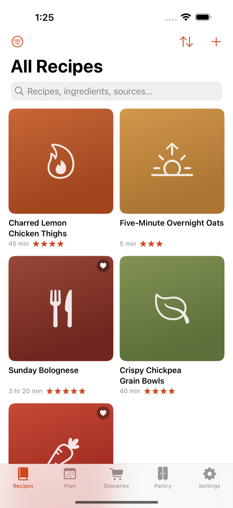
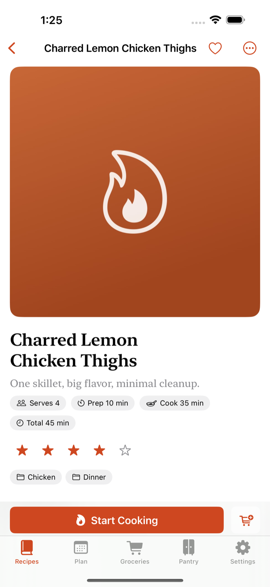
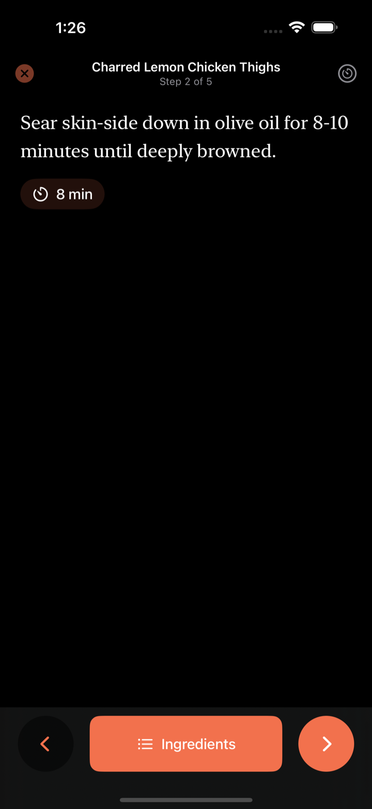

Import your whole Paprika library in one pass, save recipes from the web, plan the week, shop once, and cook with the screen awake — no accounts, no tracking, no lock-in.
In beta now. Your recipes are closer than you think.



Grid or list, categories, favorites, ratings — and search that reads titles, ingredients, directions, even the source. Trash keeps deletions for 30 days.
Import a whole .paprikarecipes archive — photos, categories, and ratings included. Re-imports are duplicate-safe: skip, replace, or merge.
Paste a link and Simmer & Sear reads the recipe data most sites publish, keeping the source with the recipe. Stubborn page? Clip it manually.
Send any recipe — or the whole week — to groceries. Quantities merge, items group by aisle, and what your pantry already has stays off the list.
Lay out breakfasts through dinners, then one tap turns the whole week into a grocery list — servings adjustments included.
Big, readable steps that keep the screen awake. Timers are detected right in the text — run several at once. Scale ×½ to ×4, metric or US units.
The App Store privacy label reads “Data Not Collected” — because none is. No servers, no accounts, and the developer cannot see your data.